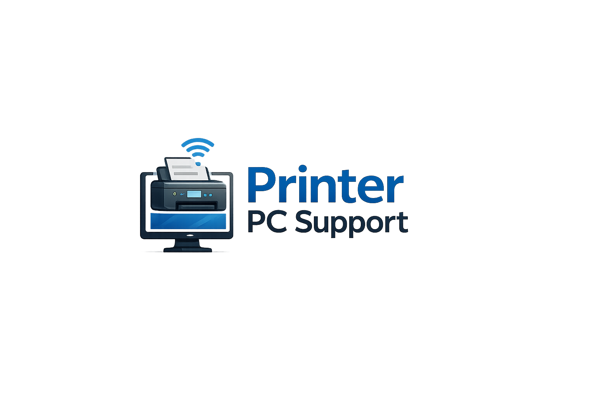

<!DOCTYPE html>
<html>
<head>
<meta name="google-site-verification" content="6Sb4AVI-Mo6RtgXJxq0x4gLP3ozEtMpCF7AAq2XGBbI" />
<title>Printer PC Support</title>
<link rel="stylesheet" href="style.css">
</head>
<body>
    <footer>
...
</footer>

<!--Start of Tawk.to Script-->
<script type="text/javascript">
var Tawk_API=Tawk_API||{}, Tawk_LoadStart=new Date();
(function(){
var s1=document.createElement("script"),s0=document.getElementsByTagName("script")[0];
s1.async=true;
s1.src='https://embed.tawk.to/6a2b639d8705f01c3509ac71/1jqsnq82i';
s1.charset='UTF-8';
s1.setAttribute('crossorigin','*');
s0.parentNode.insertBefore(s1,s0);
})();
</script>
<!--End of Tawk.to Script-->

</body>
</html>

<nav>
    
    <div>
       <a href="index.html">Home</a>
<a href="services.html">Services</a>
<a href="about.html">About</a>
<a href="contact.html">Contact</a>
    </div>
</nav>

<header class="hero">
    <h1>Need Help With Your Printer or Computer?</h1>
    <p>Fast • Friendly • Independent Technical Support</p>
    <button>Start Live Chat</button>
</header>

<section class="services">
    <div class="card">
        <section class="trust">
<h2>Popular Help Guides</h2>

<p>
<a href="hp-printer-offline.html">
How to Fix HP Printer Offline
</a>
</p>

</section>
        <h2>🖨 Printer Support</h2>
        <p>Printer Offline</p>
        <p>Printer Setup</p>
        <p>Wireless Printing Issues</p>
        <button>Get Help</button>
    </div>

    <div class="card">
        <h2>💻 Computer Support</h2>
        <p>Windows Problems</p>
        <p>Slow Computer</p>
        <p>Software Installation</p>
        <button>Get Help</button>
    </div>

    <div class="card">
        <h2>📧 Email & Wi-Fi Support</h2>
        <p>Outlook & Gmail Issues</p>
        <p>Wi-Fi Problems</p>
        <p>Internet Troubleshooting</p>
        <button>Get Help</button>
    </div>
</section>

<section class="trust">
    <h2>★★★★★</h2>
    <h3>Trusted by Home Users</h3>
    <p>Fast and friendly assistance for common computer and printer problems.</p>
</section>

<footer>
    <h3>Independent Technical Support Service</h3>
    <p>
        We are an independent technical support provider.
        We are not affiliated with, endorsed by, sponsored by,
        or associated with HP, Dell, Epson, Canon, Microsoft,
        Apple, Brother, Lenovo, Acer, Asus or any manufacturer.
    </p>
    <p>All trademarks belong to their respective owners.</p>
    <p>
<a href="privacy.html">Privacy Policy</a> |
<a href="terms.html">Terms & Conditions</a>
</p>
</footer>

</body>
</html>